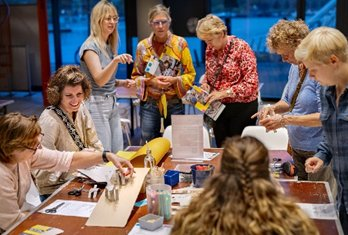
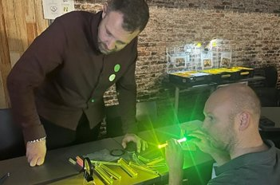
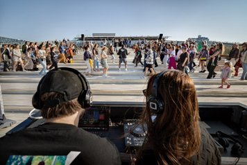
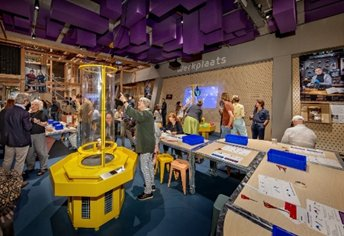
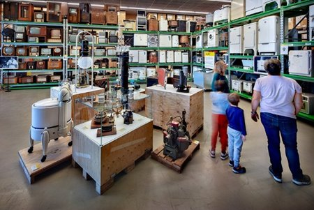
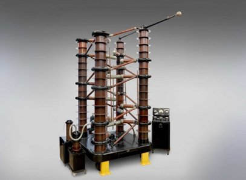
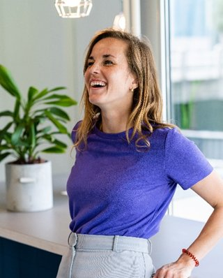

Over de samenwerking
NEMO, de Hogeschool van Amsterdam Techniek en MBO College Westpoort slaan de handen ineen.
NEMO, de Hogeschool van Amsterdam Techniek en MBO College Westpoort slaan de handen ineen. We bouwen aan een samenwerking waarin scholieren, studenten, docenten, bezoekers en professionals op verschillende manieren en momenten in aanraking komen met techniek en technologie.
Dit jaar voeren we een pilot uit. We onderzoeken welke activiteiten werken, voor wie, en hoe.
We geloven dat leren over techniek en technologie sterker wordt wanneer onderwijs, praktijk en maatschappelijke context samenkomen.
NEMO wil zijn doelgroep verbreden door interactie met studenten en jongvolwassenen en positioneert zich als clubhuis op het snijvlak van techniek en maatschappij. NEMO biedt een inspirerende omgeving waar techniek zichtbaar en beleefbaar is. Een plek waar studenten techniek creatief, praktisch en verbonden met de echte wereld kunnen ervaren. En een plek waar bezoekers kennis kunnen maken met studenten aan het werk.
Voor HvA Techniek en MBO College Westpoort biedt dit een waardevolle aanvulling op het formele curriculum. We willen bestaande onderwijsactiviteiten versterken. Niet iets extra's creëren, maar aansluiten op wat er al gebeurt binnen opleidingen, projecten en vakken.
Samen creëren we een leeromgeving waar jongeren op school én daarbuiten in aanraking komen met techniek & technologie, als impuls voor talentontwikkeling en carrièreperspectief.
In het pilotjaar 2026/2027 onderzoeken we welke activiteiten waardevol, haalbaar en impactvol zijn voor leerlingen, studenten, docenten en professionals. We richten ons daarbij op drie pijlers:
Zomaar een greep uit de ideeën waar je aan kunt denken:




Interview
Nieuwe samenwerking van start tussen Westpoort, NEMO en HvA.
Techniekonderwijs mag best wat speelser. Dat is niet zomaar een gedachte, maar het vertrekpunt van een nieuwe samenwerking tussen NEMO Science Museum, de Hogeschool van Amsterdam en MBO College Westpoort. Geen extra project dat 'erbij' komt, maar een mogelijkheid om te experimenteren en onderzoeken hoe informeel en formeel leren elkaar versterken.
Projectleider Isabel van Esch is vorige week gestart bij NEMO en brengt een opvallende combinatie met zich mee: een achtergrond in psychologie, ervaring in het publieke domein én een karakter dat niet graag stilzit. "Ik heb wel duizend hobby's", zegt ze lachend. "Surfen is mijn favoriet, maar ik ben ook graag creatief bezig. Bijvoorbeeld met Japans houtbewerken, dat is een vorm van meubels maken. Iets bouwen, testen, opnieuw proberen: eigenlijk is het een perfect voorbeeld van informeel leren."
"Informeel leren (leren door te doen), gaat vaak sneller en speelser", zegt Isabel. "Het onderwijs is van nature formeler georganiseerd. Met structuur, toetsing en diploma's. De kracht zit hem in de combinatie."
De ambitie? Een leerecosysteem creëren waarin aanstormend talent op verschillende plekken in aanraking komt met techniek en technologie. Waar studenten prototypes ontwikkelen die misschien wel worden getest tussen museumbezoekers. Waar inspiratie niet alleen in een leslokaal ontstaat, maar ook op de museumvloer.
Een belangrijk uitgangspunt: het moet geen extra belasting zijn voor docenten of teams, maar aanvullen op waar we in het onderwijs al mee bezig zijn. "Er is al genoeg druk", zegt Isabel nuchter. "We kijken juist waar we kunnen aansluiten bij wat er al gebeurt. Waar zit energie? Waar liggen kansen? En hoe kunnen we dat versterken?"
Dat kan in verschillende vormen. Hoe precies, dat moet de komende tijd onderzocht worden. Er komen ideeën voorbij zoals een challenge die aansluit op het curriculum, een inspiratiemoment bij NEMO of het verder uitbouwen van bestaande pilots zoals bij het Sensorlab van de Hogeschool van Amsterdam. Ook wordt er gekeken naar of en hoe het bedrijfsleven kan aanhaken.
"Het ligt nog niet vast", benadrukt Isabel. "Ik ben net begonnen. De komende periode staat vooral in het teken van ophalen, luisteren en ontdekken waar het echt kan landen. Wat past bij de opleidingen? Waar zit ruimte? En waar wordt het beter van?"
NEMO is een grote speelplaats, perfect om in aanraking te komen met onderwijs en een andere manier van leren. "Je hoopt dat het voelt als een creatieve broedplaats", zegt Isabel. "Dat studenten denken: dit was echt leuk om te doen. En dat docenten ervaren dat het hen juist helpt."
De komende maanden staan in het teken van gesprekken voeren, kansen in kaart brengen en bouwen aan een langdurige samenwerking tussen NEMO, de HvA en het ROC. Of zoals Isabel het zelf samenvat: "Het is gewoon heel vet dat we dit samen kunnen doen. En ik kom graag langs om te kijken waar het kan werken."
We houden jullie op de hoogte van deze nieuwe samenwerking. Eén ding is zeker: techniekonderwijs krijgt er een speelse impuls bij.
Rondleiding
NEMO Depot biedt een grote collectie met stukken uit de technologische ontwikkeling. De collectie bestaat uit vier onderdelen: 'Techniek in en rond het huis', 'Energie opwekken en opslaan', 'Installatietechniek' en 'Verlichting'.
Om een indruk van het depot te geven, en de mogelijkheden daarvan, organiseren we graag een rondleiding voor geïnteresseerde docenten en medewerkers!
Heb je daar interesse in? Laat dit ook weten via het contactformulier.
Lees hier meer over het Depot: nemosciencemuseum.nl/collectie →

Contact
Jouw kennis en ideeën zijn belangrijk! Jouw input helpt ons bij het vormgeven van de pilot en de verdere ontwikkeling van een duurzame samenwerking tussen NEMO, HvA en MBO College Westpoort.
Heb je vragen over de samenwerking? Heb je meer ideeën? Of lijkt het je leuk om samen verder te brainstormen over deze samenwerking? Dan komen we graag in contact!
📧 vanesch@e-nemo.nl Stuur een mail
Rondleiding
Interesse in een rondleiding door het NEMO Depot? Vermeld dit in je mail, dan plannen we iets in.
Samenwerking
Wil je meedenken over de pilot of zijn er activiteiten die aansluiten bij jouw opleiding of organisatie? We horen het graag.
Ideeën
Heb je een concreet idee voor een activiteit, workshop of samenwerking? Deel het gerust — geen idee is te klein.